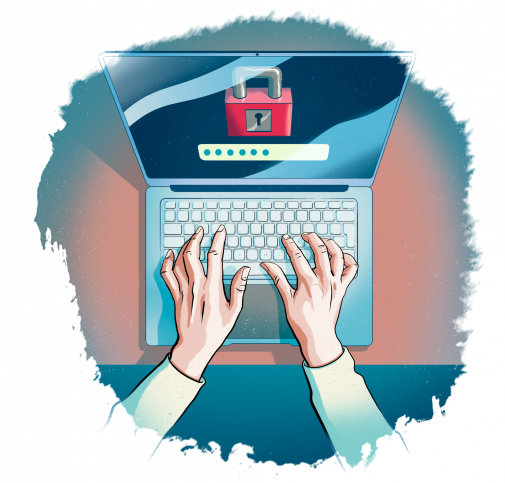

Luca Tanriverdi Tivi25A
Kuvat lähteestä pixabay.com
Ohjeistus turvalliseen tietotekniikka työhön

Suojaa internettiä käyttävät laitteet haittaohjelmilta.
Jos et käytä virustorjunta-ohjelmia, laitteesi voi olla alttiina haittaohjelmille.
Älä avaa epäilyttäviä sähköposteja tai linkkejä.
Ne voivat sisältää haittaohjelmia tai johtaa huijaussivustoille.
Käytä vahvoja salasanoja ja vaihda ne säännöllisesti.
Vahvat salasanat auttavat suojaamaan tilisi ja tietosi.
Pidä ohjelmistot ja käyttöjärjestelmät ajan tasalla.
Päivitykset sisältävät usein tärkeitä tietoturvakorjauksia, jotka suojaavat laitteesi uusilta uhkilta.
Vältä julkisia Wi-Fi-verkkoja,
erityisesti ilman VPN-yhteyttä. Julkiset verkot voivat olla alttiita hyökkäyksille, jotka voivat vaarantaa tietosi.
Muista varmuuskopioida tärkeät tiedot säännöllisesti.
Näin voit palauttaa tietosi, jos laitteesi joutuu hyökkäyksen kohteeksi tai muuten vahingoittuu.
Ole varovainen, mitä tietoja jaat verkossa.
Henkilötietojen jakaminen voi altistaa sinut identiteettivarkauksille ja muille tietoturvariskeille.
Käytä kaksivaiheista tunnistautumista,
jos mahdollista. Tämä lisää ylimääräisen suojakerroksen tilillesi, mikä vaikeuttaa luvattoman pääsyn saamista.
Ole tietoinen sosiaalisen median tietoturvariskeistä.
Rajoita henkilökohtaisten tietojen jakamista ja tarkista yksityisyysasetuksesi säännöllisesti.